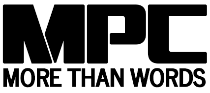
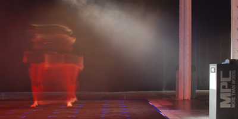

|
||||||
 |
||||||
The tradition of oral histories has always played a part within culture, but that history and tradition is more than just a relationship to language and words.The manipulation of sound has long been a part of music as well as storytelling. Today, remixing, sampling, and remaking are all trends within music, film, and popular culture that question authenticity and what counts as the original. More Than Words is a large-scale immersive installation that simulates an MPC player. Instead of the normal sounds that are used in the real device for mixing beats, the installation offers a new way to tell stories, through fragmented, stream-of-consciousness narrative association. It is a new way to experience a story, one that is unique to each viewer depending on their particular movements within the installation. Each installation of the works is unique. The audio recordings in More Than Words: 16 Stories (2017) were inspired by a series of interviews with 16 participants. More recently in More Than Words: Seismes (2018), the sounds in the installation came only from YouTube videos. Some were well-known audio recordings, like Trump’s “grab them by the pussy”, while others were less recognizable within their isolated context, like children crying in a US detention center. |
 |
|||||
More Than Words is a collaborative work by: |
||||||